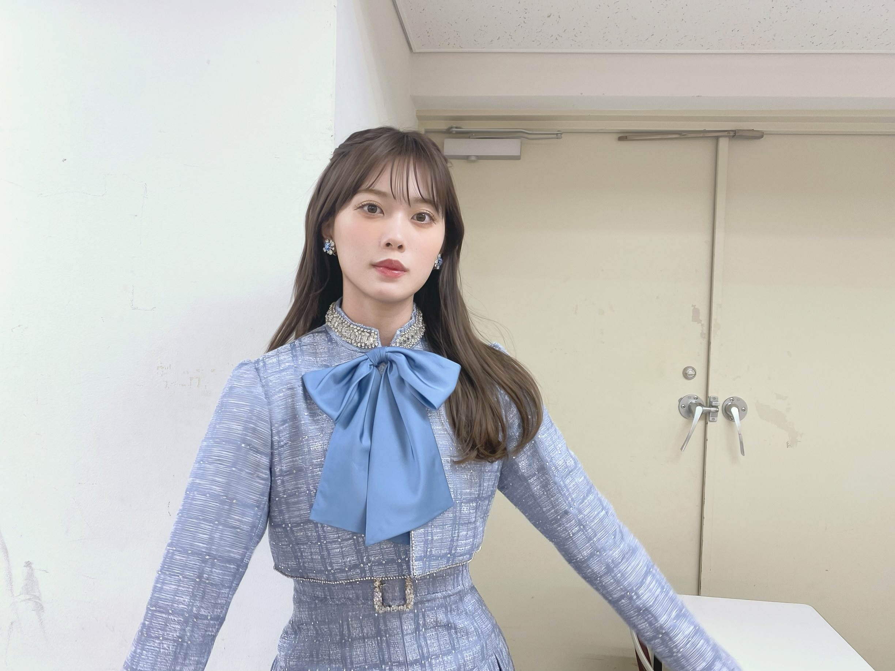
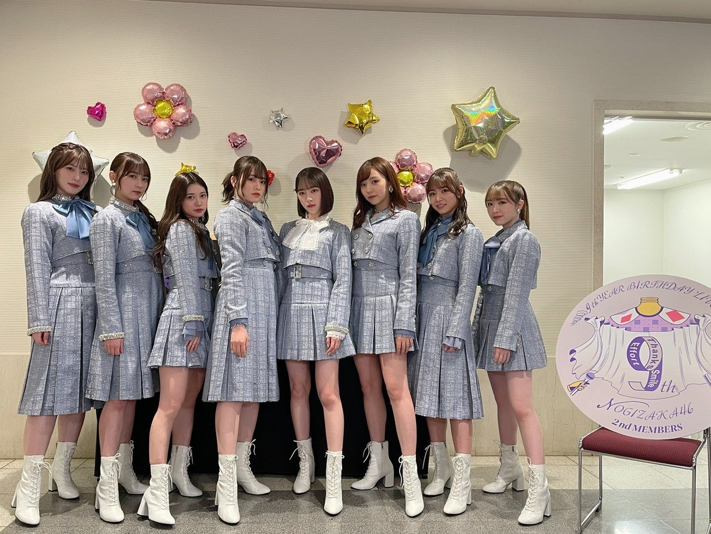
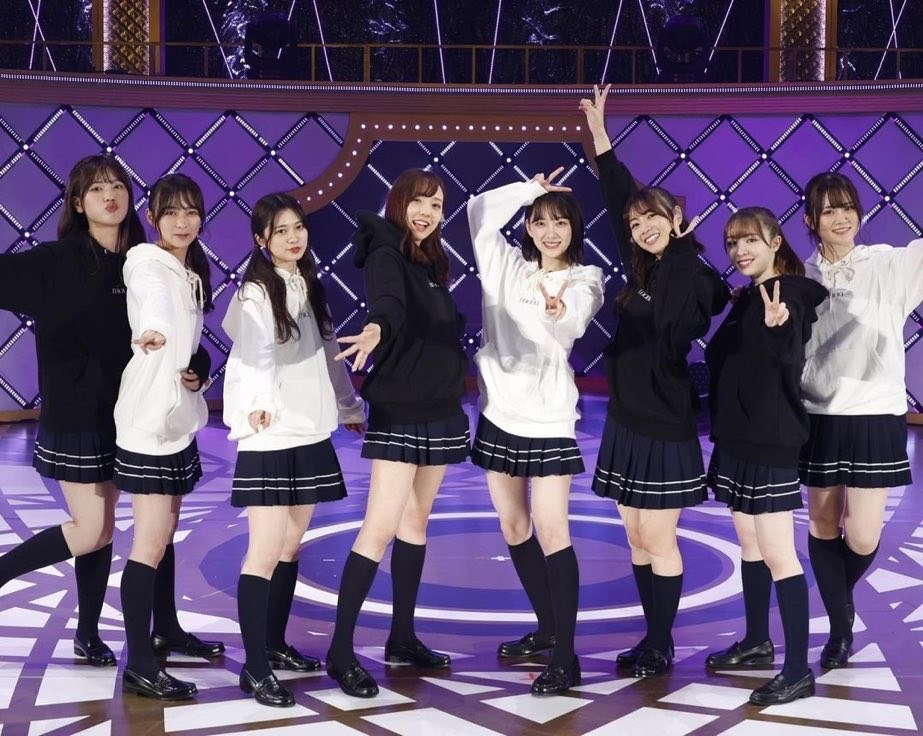

2021/0417Satみずいろ
こんばんは！
伊藤純奈です

すごい絶妙な瞬間の写真(笑)
ちゃんとしたお顔の写真は
Instagramに載せています↓
遅くなりましたが
乃木坂46
9th YEAR BIRTHDAY LIVE
〜2期生ライブ〜
みてくださった皆様ありがとう
ございました☺︎
センター企画では
サヨナラの意味を
歌わせて頂きました！
色々な思い入れがあるこの曲を
やっと叶った2期生ライブで
歌う事ができて嬉しかったです。
そしてみおな、卒業おめでとう！
初期から2期生を引っ張ってくれて
大好きでいてくれてありがとう。
やっぱり2期生の真ん中はみおなだなあと
改めて思いました。
最後までたくさんありがとう。
これからもよろしくねっ
配信という形でしたが
1年越しに2期生ライブ、開催できて
本当に幸せでした！！
ありがとうございました！


不思議な子たちの集まりだなあと
改めて思いました。2期生。(笑)
そんなところが愛おしい〜〜！らぶ！
明日18日は
筒美京平さんのトリビュートコンサートに
ひなちまと参加させて頂きます！
今からとっても緊張していますが
楽しみです☺︎よろしくお願い致します！
それでは〜
2021/04/17 20:18
コメント(355)
ブログ更新ありがとう☺︎︎︎︎
バースデーライブお疲れ様でしたー！！
ずーっと泣きながら配信見てました。笑
ミーグリでまた感想伝えます！☺︎︎︎︎
トリビュートコンサートは受験生だしコロナもあるしで見に行けないけど、家から応援してます！頑張ってね〜
じゅんなちゃん大好きー！
バースデーライブお疲れ様でしたー！！
ずーっと泣きながら配信見てました。笑
ミーグリでまた感想伝えます！☺︎︎︎︎
トリビュートコンサートは受験生だしコロナもあるしで見に行けないけど、家から応援してます！頑張ってね〜
じゅんなちゃん大好きー！
2期生ライブお疲れ様ー！
もう1秒も見逃せないぐらい、色んな感情が詰まった大切なライブ見れて幸せだよ～。
純奈さんマジ最高ー！
明日も頑張ってね
もう1秒も見逃せないぐらい、色んな感情が詰まった大切なライブ見れて幸せだよ～。
純奈さんマジ最高ー！
明日も頑張ってね
チケット買うのに出遅れてしまったのであまりいい席ではないのですが、明日国際フォーラム行きます。楽しみです！
純奈ちゃんやっほ〜！
ブログ更新ありがとう！！
二期生ライブの未央奈プロデュースの衣装本当に可愛い！！！純奈ちゃんも可愛くて待ち受けにした！
ロングいいね〜^_^超可愛い！
二期生ライブは切なくて儚くて。でも大好きな時間だった！
久しぶりに目腫れるくらい泣いた(笑)
明日のコンサート行けないけど、応援してます！純奈ちゃん選ばれててすごい！
27枚目のミーグリも楽しみにしてる！それまでに就活終わらせます…バイトやってお金貯めるよー！
体調には気をつけてね〜☻
私なんかが言うのはあれだけどお互い頑張ろうね〜純奈ちゃん大好きです！
ブログ更新ありがとう！！
二期生ライブの未央奈プロデュースの衣装本当に可愛い！！！純奈ちゃんも可愛くて待ち受けにした！
ロングいいね〜^_^超可愛い！
二期生ライブは切なくて儚くて。でも大好きな時間だった！
久しぶりに目腫れるくらい泣いた(笑)
明日のコンサート行けないけど、応援してます！純奈ちゃん選ばれててすごい！
27枚目のミーグリも楽しみにしてる！それまでに就活終わらせます…バイトやってお金貯めるよー！
体調には気をつけてね〜☻
私なんかが言うのはあれだけどお互い頑張ろうね〜純奈ちゃん大好きです！
不思議な子たちの集まりだよねー。でもそれぞれのピースが合わさって二期生の色が出るんだよね。
純ちゃんのサヨナラの意味素晴らしかったよー。待ち続けた甲斐があった！これからも応援してるね！
純ちゃんのサヨナラの意味素晴らしかったよー。待ち続けた甲斐があった！これからも応援してるね！
純奈ちゃん、ブログありがとう。
2期生ライブ最高でした！号泣したり笑ったり、心が忙しく動いたよ。
本当に2期生大好き。未央奈が卒業しても、この気持ちは変わらないよ。
明日は純ちゃんの美声を響かせてきてね。現地には行けないけれど、純ちゃんの実力を知っているものとして、きっと素晴らしい歌になることを確信してる！
リラックスして(心配はいらないか！)楽しんでね。
2期生ライブ最高でした！号泣したり笑ったり、心が忙しく動いたよ。
本当に2期生大好き。未央奈が卒業しても、この気持ちは変わらないよ。
明日は純ちゃんの美声を響かせてきてね。現地には行けないけれど、純ちゃんの実力を知っているものとして、きっと素晴らしい歌になることを確信してる！
リラックスして(心配はいらないか！)楽しんでね。
純ちゃんブログ更新ありがとう〜！
2期生ライブ、この目にしっかり焼き付けました！
サヨナラの意味を歌っていた純ちゃんの姿はすごく美しかった！
2期生も純ちゃんも大好きです！
またね〜
2期生ライブ、この目にしっかり焼き付けました！
サヨナラの意味を歌っていた純ちゃんの姿はすごく美しかった！
2期生も純ちゃんも大好きです！
またね〜
純ちゃん綺麗すぎるよㅠ_ㅠ
純奈ー＼(^^)／
ブログ更新ありがとう
2期生ライブ、お疲れ様でした！
ライブは、観れなかったんですけど
乃木中での、2期生ハウス 最高でした！
仲がエエのが、スゴく伝わって感動しました！
これからも、応援してます
ブログ更新ありがとう
2期生ライブ、お疲れ様でした！
ライブは、観れなかったんですけど
乃木中での、2期生ハウス 最高でした！
仲がエエのが、スゴく伝わって感動しました！
これからも、応援してます
筒美京平さんのトリビュートコンサート出演 、おめでとうございます。
、おめでとうございます。
ビックリするような豪華な出演者の中へ、乃木坂46からの代表として、舞台経験豊富で歌もうまい伊藤さんと樋口さんの選抜なら問題なし。
筒美さんのすばらしい楽曲を、観客の皆さんに、とどけてください。
※4/18の演奏曲目を見るとあれかな
緊張はあると思いますが、できるだけリラックスです☺
ビックリするような豪華な出演者の中へ、乃木坂46からの代表として、舞台経験豊富で歌もうまい伊藤さんと樋口さんの選抜なら問題なし。
筒美さんのすばらしい楽曲を、観客の皆さんに、とどけてください。
※4/18の演奏曲目を見るとあれかな
緊張はあると思いますが、できるだけリラックスです☺
じゃんなちゃんこんばんは
ブログ更新ありがとうございます！
二期生ライブ本当に素晴らしかったです！！
何十回何百回観ても絶対楽しく観れるライブだと思います
サヨナラの意味めちゃくちゃ好きです
じゃんなちゃんの歌声本当に大大大好き(*´˘`*)♡
二期生ハウスも面白かったです
フルを観たいな〜〜〜〜
やっぱり二期生大好きです！！！！！！
ブログ更新ありがとうございます！
二期生ライブ本当に素晴らしかったです！！
何十回何百回観ても絶対楽しく観れるライブだと思います
サヨナラの意味めちゃくちゃ好きです
じゃんなちゃんの歌声本当に大大大好き(*´˘`*)♡
二期生ハウスも面白かったです
フルを観たいな〜〜〜〜
やっぱり二期生大好きです！！！！！！
サヨナラの意味めっちゃ良かった！！
感動しました！！
感動しました！！
２期生ライブ本当に楽しかったです！！
ずっとずっと忘れられないような特別な時間でした、ありがとう
次のミーグリでは直接お話したいのでこれから頑張りたいと思います
明日のトリビュートライブも応援してます
ずっとずっと忘れられないような特別な時間でした、ありがとう
次のミーグリでは直接お話したいのでこれから頑張りたいと思います
明日のトリビュートライブも応援してます
じゅんなー！！ブログ更新ありがとう〜！！！٩(ˊᗜˋ*)و
絶妙な瞬間の写真でもかわいいじゅんなちゃん笑
いつも写真ありがとね〜(≧∇≦)
ライブお疲れ様ー！！！
サヨナラの意味！！とっっっってもよかったよ(*꒦ິ⌓꒦ີ)
1年越しの2期生ライブ、そしてセンターとしてサヨナラの意味を披露するじゅんなちゃんの姿を見れてとっても感動しました
歌もすっごく上手になっててじゅんなちゃんの思いや努力が垣間見えて、更に目頭が熱くなりました
本当に！！お疲れ様！！
みおなの最後のステージに一緒に立っている2期生、そして乃木坂のみんなをファンとして見守ることが出来てとっても幸せだった！
アフター配信の仲良し加減がもう大好きだった笑
トリビュートコンサート頑張って〜！！！
ちまとの勇姿を見させて頂きます！！(๑•̀ •́)و✧
これからも体調に気をつけて！
応援してます！！！(〃 'д'〃)و
絶妙な瞬間の写真でもかわいいじゅんなちゃん笑
いつも写真ありがとね〜(≧∇≦)
ライブお疲れ様ー！！！
サヨナラの意味！！とっっっってもよかったよ(*꒦ິ⌓꒦ີ)
1年越しの2期生ライブ、そしてセンターとしてサヨナラの意味を披露するじゅんなちゃんの姿を見れてとっても感動しました
歌もすっごく上手になっててじゅんなちゃんの思いや努力が垣間見えて、更に目頭が熱くなりました
本当に！！お疲れ様！！
みおなの最後のステージに一緒に立っている2期生、そして乃木坂のみんなをファンとして見守ることが出来てとっても幸せだった！
アフター配信の仲良し加減がもう大好きだった笑
トリビュートコンサート頑張って〜！！！
ちまとの勇姿を見させて頂きます！！(๑•̀ •́)و✧
これからも体調に気をつけて！
応援してます！！！(〃 'д'〃)و
ブログ更新ありがとう。
2期生ライブお疲れ様でした。最初から最後まで泣きっぱなしでした。純奈ちゃんはもちろん、みんなが輝いてたし、2期生の絆の強さを感じれたライブでした。
先日、1期生松村沙友理ちゃんの卒業発表がありました。
僕達ファンも悲しいけど、長年一緒に活動してきたメンバーはもっと悲しいと思います。
残りの時間でたくさんの思い出を作ってください。
2期生ライブお疲れ様でした。最初から最後まで泣きっぱなしでした。純奈ちゃんはもちろん、みんなが輝いてたし、2期生の絆の強さを感じれたライブでした。
先日、1期生松村沙友理ちゃんの卒業発表がありました。
僕達ファンも悲しいけど、長年一緒に活動してきたメンバーはもっと悲しいと思います。
残りの時間でたくさんの思い出を作ってください。
遅くなったけど二期生ライブお疲れ様でした～！
セトリも衣装もメンバーも全て最高でした。
サヨナラの意味を披露した純奈ちゃんがとても輝いてて綺麗でした
明日のコンサート頑張ってね！！応援してます！！
純奈ちゃん大好きだよ♡
セトリも衣装もメンバーも全て最高でした。
サヨナラの意味を披露した純奈ちゃんがとても輝いてて綺麗でした
明日のコンサート頑張ってね！！応援してます！！
純奈ちゃん大好きだよ♡
好きです。
本当、素敵なライブでした。
今更何ですが、２期生の虜、大好きになりました。
純奈ちゃん、これからもよろしくネ！
今更何ですが、２期生の虜、大好きになりました。
純奈ちゃん、これからもよろしくネ！
純奈〜！2期生ライブほんとによかったしめちゃめちゃ感動しました！明日のコンサートも頑張ってください！次のブログも楽しみにしてます！
お疲れ様です！
2期生ライブお疲れ様でした！一年待った甲斐がありました、心底楽しませて頂きました。
純奈さんセンターのサヨナラの意味、ようやく聴けました...もう！...言葉になりません...歌い終わった後の涙、良い表情でした。
堀さん卒業も相まって終始感動的なムードかつ、とても魅せられたライブでした。
でもアフター配信では素でふざけてたりわちゃわちゃしたり、本当に良い仲間ですね。
明日のコンサートも楽しんでください。
応援してます！
2期生ライブお疲れ様でした！一年待った甲斐がありました、心底楽しませて頂きました。
純奈さんセンターのサヨナラの意味、ようやく聴けました...もう！...言葉になりません...歌い終わった後の涙、良い表情でした。
堀さん卒業も相まって終始感動的なムードかつ、とても魅せられたライブでした。
でもアフター配信では素でふざけてたりわちゃわちゃしたり、本当に良い仲間ですね。
明日のコンサートも楽しんでください。
応援してます！
ブログ更新ありがとう ２期生ライブ見たよー 凄く可愛かった❗ライブの佳境では画面の前で、ずっとうるうるしちゃいました❗
お仕事お疲れ様です。
２期生ライブ、１期生ライブ楽しく視聴させてもらいました
２期生ライブは涙なくして観れなかったし、１期生ライブは楽しみながら笑いながら、とそれぞれ色の違うライブで本当に楽しかったです。
コロナ禍の昨年からはまった私ですので、実際のライブに行ったことがないのがとても残念ですが、コロナ禍が収まったら是非現地にも行きたいです。
純奈さんも元気で頑張ってくださいね✨
２期生ライブ、１期生ライブ楽しく視聴させてもらいました
２期生ライブは涙なくして観れなかったし、１期生ライブは楽しみながら笑いながら、とそれぞれ色の違うライブで本当に楽しかったです。
コロナ禍の昨年からはまった私ですので、実際のライブに行ったことがないのがとても残念ですが、コロナ禍が収まったら是非現地にも行きたいです。
純奈さんも元気で頑張ってくださいね✨
ブログ更新ありがとう。
配信観れましたよ。
二期生頑張れ！
配信観れましたよ。
二期生頑張れ！
明日の筒美京平トリビュートコンサート行くよ！
2階席だけど、ペンライトと推しメンタオル持って行きます。
出演者が凄い人たちだけど、楽しんでね！♪
2階席だけど、ペンライトと推しメンタオル持って行きます。
出演者が凄い人たちだけど、楽しんでね！♪
純奈ちゃん応援してます♡
サヨナラの意味で4年分の鼻水を放出した
いろいろな呼び方はありますが、唯一無二の存在ってありますね。
なんだかんだ言っても大切な存在って。
なんだかんだ言っても大切な存在って。
ブログ更新ありがとうございます！サヨナラの意味での涙が印象的でした。コンサート楽しんでくださいね！
純奈、ブログ更新ありがとうございます！
2期生ライブとっても良かったです！2期生の絆がひしひしと伝わってきて感動しました。未央奈もきっと安心して羽ばたいていけたのではないでしょうか。純奈センターのサヨナラの意味も良かったです。乃木坂楽曲の中でトップを争う好きな曲なので、その曲を大好きな純奈センターで見れたことが本当に嬉しかったです。ありがとう。
筒美京平さんのトリビュートコンサートへの出演もびっくりしました。純奈すごい！緊張すると思いますが、ちまもいるので純奈らしく頑張ってください。
それでは、お体にお気をつけて！ずっとずっと応援しています！
2期生ライブとっても良かったです！2期生の絆がひしひしと伝わってきて感動しました。未央奈もきっと安心して羽ばたいていけたのではないでしょうか。純奈センターのサヨナラの意味も良かったです。乃木坂楽曲の中でトップを争う好きな曲なので、その曲を大好きな純奈センターで見れたことが本当に嬉しかったです。ありがとう。
筒美京平さんのトリビュートコンサートへの出演もびっくりしました。純奈すごい！緊張すると思いますが、ちまもいるので純奈らしく頑張ってください。
それでは、お体にお気をつけて！ずっとずっと応援しています！
純ちゃん 可愛い❤️ 純ちゃんのセンター見たい！
純ちゃんブログ更新ありがとう〜！！！最近はインスタでも純ちゃんが見れて嬉しいです 前回の期間は受験期で応募できなかったミーグリだけど、今回のシングルは絶対に応募します！！！！！話せるか分からないけど当たったらいいな またお手紙も送ります！大好きです
純奈さん、ブログの更新ありがとうございます
２期生ライブお疲れ様でした。
いっぱい純奈さんを見られて眼福でした。
素敵な時間をありがとうございました。
一年前はできなかった２期生ライブができたこと一ファンとしてもすごく嬉しく思います。
そして何よりサヨナラの意味
言葉で表現するのが難しくてありきたりな言葉になってしまいますが、それでもこういうしかないです！
感動しました
一年前歌いたかったこの曲を一年経っても「やっぱり歌いたい」と言える意志の強さを素直に尊敬します。
現場で歌っている姿を見たかったです。
「これがホントのラストチャンスと思って」とおっしゃってましたが、また、この曲を歌う純奈さんを観たいと思う自分がいます。
手前勝手な想いですかね。
それでもいつも思うのは、今までも、これから先も、純奈さんがやってみたいと思ったことが、一つでも多く叶いますようにということです。
その一つが、この２期生ライブで叶ったのはやっぱり嬉しいです（笑）
ありがとう
乃木恋のイベントもありがとうございました！
素敵な歌声でした。
歌って欲しいと希望した曲は、引かれなかったので残念でしたが、またの楽しみにしておきます。
明日のコンサート、緊張もあるようですが、楽しんで来てくださいね。
素敵な時間になりますように。
２期生ライブお疲れ様でした。
いっぱい純奈さんを見られて眼福でした。
素敵な時間をありがとうございました。
一年前はできなかった２期生ライブができたこと一ファンとしてもすごく嬉しく思います。
そして何より
言葉で表現するのが難しくてありきたりな言葉になってしまいますが、それでもこういうしかないです！
感動しました
一年前歌いたかったこの曲を一年経っても「やっぱり歌いたい」と言える意志の強さを素直に尊敬します。
現場で歌っている姿を見たかったです。
「これがホントのラストチャンスと思って」とおっしゃってましたが、また、この曲を歌う純奈さんを観たいと思う自分がいます。
手前勝手な想いですかね。
それでもいつも思うのは、今までも、これから先も、純奈さんがやってみたいと思ったことが、一つでも多く叶いますようにということです。
その一つが、この２期生ライブで叶ったのはやっぱり嬉しいです（笑）
ありがとう
乃木恋のイベントもありがとうございました！
素敵な歌声でした。
歌って欲しいと希望した曲は、引かれなかったので残念でしたが、またの楽しみにしておきます。
明日のコンサート、緊張もあるようですが、楽しんで来てくださいね。
素敵な時間になりますように。
純奈ちゃんブログ更新ありがとう！❤︎
絶妙な顔の純奈ちゃんもむっちゃ可愛い、、！！
2期生ライブお疲れ様でした！サヨナラの意味すごく感動したよ、、色んな思いが伝わりました！
そしてずっと純奈ちゃん美しかったです♡
明日のコンサート頑張ってね！応援してます☺︎
純奈ちゃんだいすき！ずっと単推しだよ（ ; ; ）
絶妙な顔の純奈ちゃんもむっちゃ可愛い、、！！
2期生ライブお疲れ様でした！サヨナラの意味すごく感動したよ、、色んな思いが伝わりました！
そしてずっと純奈ちゃん美しかったです♡
明日のコンサート頑張ってね！応援してます☺︎
純奈ちゃんだいすき！ずっと単推しだよ（ ; ; ）
2期生LIVEすげー感動しました。
舞台頑張ってください！！
舞台頑張ってください！！
お疲れ様です！
2期生ライブ見させて頂きました！
サヨナラの意味は本当に名曲だなと感じました！
やっぱり2期生最高です！
これからも頑張って！
2期生ライブ見させて頂きました！
サヨナラの意味は本当に名曲だなと感じました！
やっぱり2期生最高です！
これからも頑張って！
安定の可愛さだ～(*^^*)
純奈ちゃんの歌声が大好きすぎる！！
純奈ちゃんの歌声が大好きすぎる！！
純奈ー！！ライブお疲れ様！！
二期生のみんなが大好き❤
二期生のみんなが大好き❤
皆さんお待ちかねのブログ更新ありがとうございます。私の優秀だったはずのスマホではなく、モバメでのお知らせで知りましたが、モバメの笑顔の写真、、、
キュン死しました。モバメの特権かもしれませんが、純奈さんの魅力全開のこの写真は、皆さんに見てほしいものです。いつも思いますが、笑顔本当に素敵ですね。
昨日まで明日の予報は雨でしたが、純奈さんの明日のご活躍を占うかのように快晴に変わったようです。二階席はもしかしたら、乃木坂ファンで埋め尽くされているかもしれません。
キュン死しました。モバメの特権かもしれませんが、純奈さんの魅力全開のこの写真は、皆さんに見てほしいものです。いつも思いますが、笑顔本当に素敵ですね。
昨日まで明日の予報は雨でしたが、純奈さんの明日のご活躍を占うかのように快晴に変わったようです。二階席はもしかしたら、乃木坂ファンで埋め尽くされているかもしれません。
純ちゃんブログ更新ありがとうございます。純ちゃん応援してます。
『サヨナラの意味』
一期生に対する想い、そして″旭川の女″に対する想い、ちゃんと伝わりましたよ。
歌っている姿に、5thバスラ初日の光景がダブりました。
タイミングとか、色々重ならないとなかなか難しいかもしれませんが、いつの日か純奈伊藤の歌う『ないものねだり』も聴いてみたいな。
一期生に対する想い、そして″旭川の女″に対する想い、ちゃんと伝わりましたよ。
歌っている姿に、5thバスラ初日の光景がダブりました。
タイミングとか、色々重ならないとなかなか難しいかもしれませんが、いつの日か純奈伊藤の歌う『ないものねだり』も聴いてみたいな。
ありがとう！！こんぺいとうが好きだった頃から大好きです！
ブログ更新ありがとう。可愛い写真もありがとう。コンサート頑張ってね。またバッチリコメ残すね。ナオッチ
じゅんにゃーーー＼(^o^)／お疲れ様でした
私はこの表情が好きだけど(*´ω｀*)♡（笑）
そして2期生ライブお疲れ様でした
これからも未央奈ちゃんと仲良くしてね＼(^o^)／
そして明日ひなちまとじゅんの歌声聞けるって楽しみ＼(^o^)／
これからも頑張って٩(ˊᗜˋ*)و
私はこの表情が好きだけど(*´ω｀*)♡（笑）
そして2期生ライブお疲れ様でした
これからも未央奈ちゃんと仲良くしてね＼(^o^)／
そして明日ひなちまとじゅんの歌声聞けるって楽しみ＼(^o^)／
これからも頑張って٩(ˊᗜˋ*)و
2期生ライブ最高でした。
こんばんは！
ライブお疲れ様。
微妙な表情って言ってるけど、十分綺麗ですよ。
4月になって転職して引っ越しして、新たな新生活してます。
純ちゃんもコロナ、体調に気をつけてください。
ライブお疲れ様。
微妙な表情って言ってるけど、十分綺麗ですよ。
4月になって転職して引っ越しして、新たな新生活してます。
純ちゃんもコロナ、体調に気をつけてください。
純奈～ こんにちは
ブログの更新、ありがとうございます。
２期生ライブ、改めておつかれさまでした。「未央奈レス」状態が続いていますが、こうして純奈の文を読んで、改めて２期生の不思議な力に納得です。「アナスターシャ」と「ゆっくりと咲く花」はホント名曲です。たくさんの感動、ありがとうございました。
そして明日は「筒美京平さんの特別コンサート」、ひなちまともども、乃木坂の代表として、素敵な歌声をお届けくださいね。筒美さんの歌は私にとっては、まさに青春そのもの、豪華なゲストの中に入ってのご活躍、お祈りしております。
ブログの更新、ありがとうございます。
２期生ライブ、改めておつかれさまでした。「未央奈レス」状態が続いていますが、こうして純奈の文を読んで、改めて２期生の不思議な力に納得です。「アナスターシャ」と「ゆっくりと咲く花」はホント名曲です。たくさんの感動、ありがとうございました。
そして明日は「筒美京平さんの特別コンサート」、ひなちまともども、乃木坂の代表として、素敵な歌声をお届けくださいね。筒美さんの歌は私にとっては、まさに青春そのもの、豪華なゲストの中に入ってのご活躍、お祈りしております。
お疲れ様です!
2期生ライブおつかれさま～！
時間を忘れるぐらい最高でした。
これからも純奈さんの活躍楽しみにしてます！
いつもありがとう～。
明日のライブも頑張ってね！
時間を忘れるぐらい最高でした。
これからも純奈さんの活躍楽しみにしてます！
いつもありがとう～。
明日のライブも頑張ってね！
こんばんは。ブログ更新ありがとうございます。
2期生ライブお疲れ様でしたー。未央奈ちゃん卒業しちゃいましたね。今年も卒業者がでるのはおかしい事では無いけれど、やっぱり寂しいものですね。乃木坂46も世の中も時々刻々と変化していきます。かく言う私も前進の歩みを止めていません。私は57歳ですが、まだまだ成長したいです。私もまだ自分をあきらめてはいないです。
ではまた。
2期生ライブお疲れ様でしたー。未央奈ちゃん卒業しちゃいましたね。今年も卒業者がでるのはおかしい事では無いけれど、やっぱり寂しいものですね。乃木坂46も世の中も時々刻々と変化していきます。かく言う私も前進の歩みを止めていません。私は57歳ですが、まだまだ成長したいです。私もまだ自分をあきらめてはいないです。
ではまた。


2期生ライブお疲れ様でした！
未央奈ちゃんプロデュースの衣装はやっぱりみんな本当に似合ってたし、純奈ちゃんの髪型お姫様みたいでキラキラしててとってもすてきでした！またライブとか大事な時にしてくれたらうれしいなあ、、♡
センター企画のサヨナラの意味は、まず純奈ちゃんの歌声が本当に本当に綺麗でソロパートも多くて、2期ちゃんみんな笑顔で楽しそうで見ている私もすごく幸せでした︎☺︎︎☺︎
純奈ちゃんの憧れの先輩に対する想いと曲を大切にしている気持ちがとっても伝わって本当に感動して曲が終わる頃には私も泣いちゃってました(；；)
アフター配信も含めてとにかく楽しんでる2期ちゃんが見れて本当に良かったです！
この日のためにいっぱい準備してくれて私たちファンを楽しませてくれてありがとう̤ᙏ̤̫
明日は偉大な方々とのすごく大きな舞台だと思うけどちまちゃんと一緒に楽しんでね❀ ❀ ❀応援してます̤ᙏ̤̫
まひろ